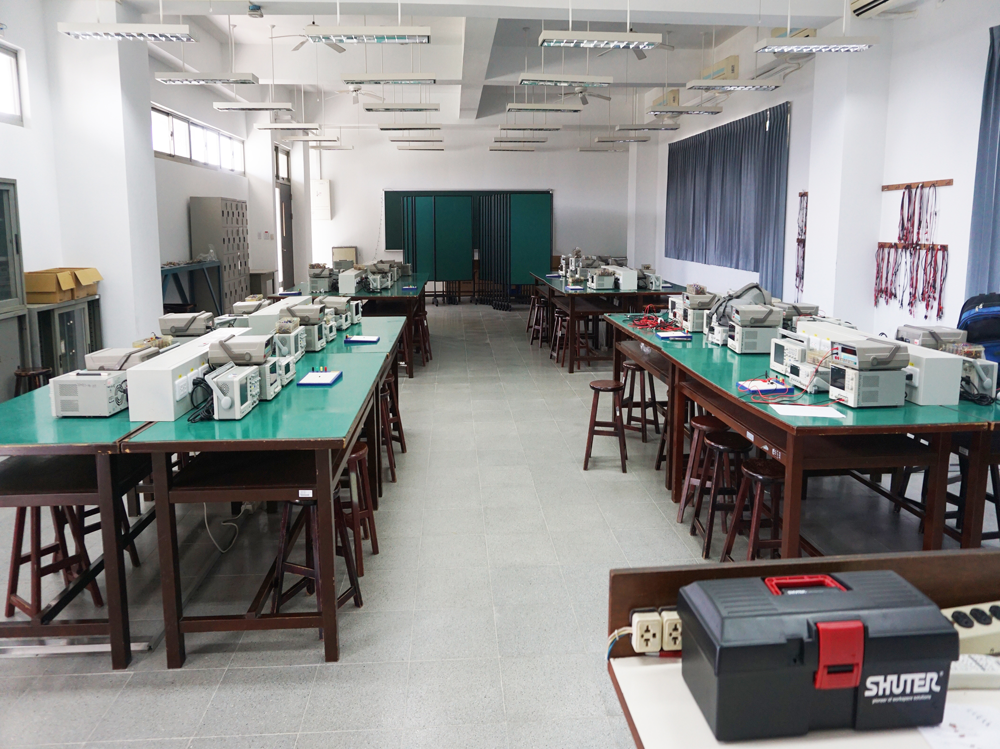
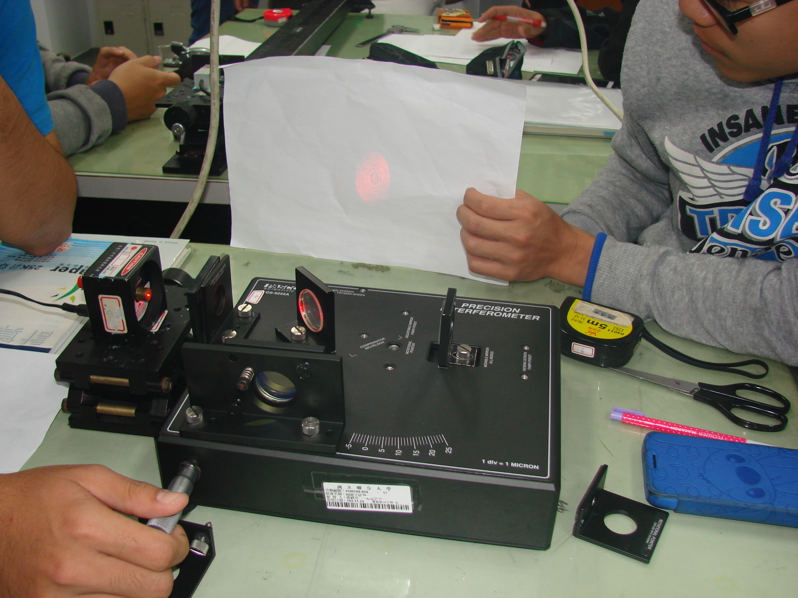
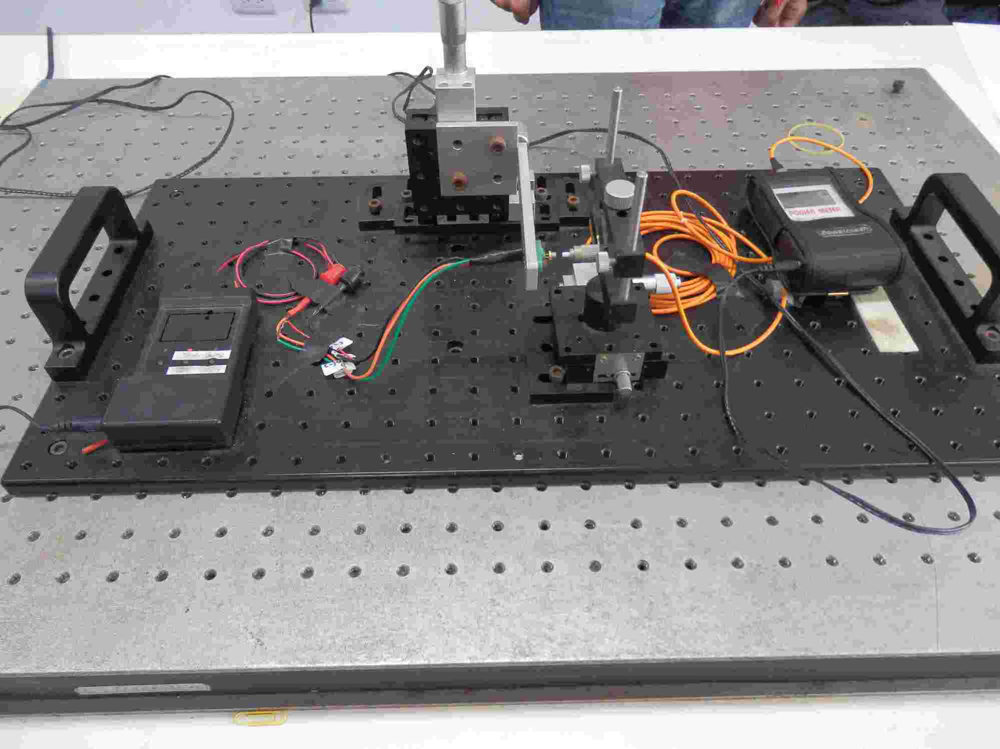
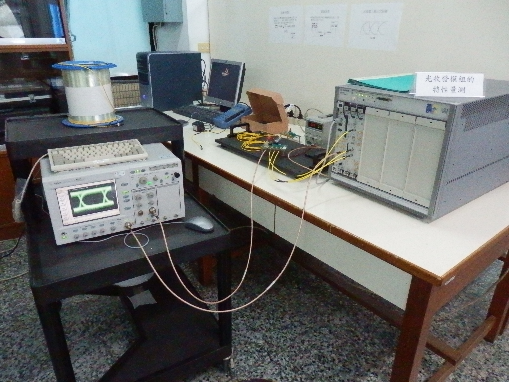
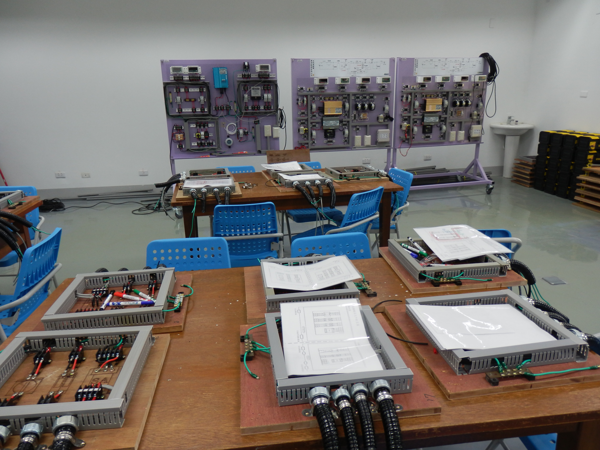

位置/面積:
教學主題:
電子電路教學實驗室
負責老師:謝鴻志
電子電路教學實驗室
位置/面積:
B3-301/190.5m2
教學主題:
本實驗室提供學生在學習電路學和電子學理論課之後，進行相關實驗，以實現理論與實作相輔相成之效果。
本實驗室計有24套儀表組合，可容納24組學生進行實驗(原則上每組2-3人)。每一組儀表有電源供應器、信號產生器、數位電表和雙軌示波器等四部主要儀表。
此外還有24部手攜式數位電表供學生自由借用，八部符合工安規格的電源箱提供安全、穩定的市電。
每個學期由本系經費購買實驗所需電子元件供學生使用，每週由教師先教授當週相關理論和實驗步驟、注意事項，再讓學生實作，以符合理論、實作並進的效果。

位置/面積:
教學主題:
光學教學實驗室
負責老師:陳逸寧
光學教學實驗室
位置/面積:
B3-305/
119m2
教學主題:
搭配光電的課程：
1.藉由實驗的過程讓學生確實瞭解幾何光學與物理光學的原理，對光的特性有深入的探討，以培訓基礎光學元件及光電系統等領域的人才。
2.讓同學們不僅從課堂上學習光學理論知識，並能從實驗課中，實際動手架設實驗裝置、觀察現象、並量測結果、應證，藉由實驗認識光波特
有之干涉、繞射現象，且由實驗教導學生如何應用光波現象於精密量測與分析。

位置/面積:
教學主題:
雷射原理與應用教學實驗室
負責老師:洪境祥
雷射原理與應用教學實驗室
位置/面積:
B3-402/89m2
教學主題:
本實驗課程共有下述的十個實驗項目，希望可以讓學生盡可能接觸到各式各樣的雷射及從雷射基本特性到雷射重要應用等廣泛而多元的實驗。
I. 五個與雷射基本特性量測相關之實驗
1. 高斯雷射光束的空間強度分佈量測
2. 利用雷射斑點和shear plate測量透鏡的成像面與光束的平行性
3. 雷射光束的極化特性和波片特性量測
4. 半導體雷射的基本特性量測(1): L-I 及I-V曲線
5. 半導體雷射的基本特性量測(2):光頻譜特性
II. 五個與雷射應用相關之實驗
1. 利用像散法做光碟機的聚焦誤差偵測之模擬實驗
2. 雷射二極體與光纖間的耦合特性量測
3. 二極體泵浦固態雷射系統的調準與特性量測
4. 二氧化碳雷射的特性參數量測與木塊的簡易加工
5. Nd:YAG雷射的特性參數量測與不銹鋼片的簡易加工

光學元件製造與檢測教學實驗室
負責老師:龔祖德
光學元件製造與檢測教學實驗室
位置/面積:
B3-406/80.5m2
教學主題:
1.光學玻璃切割
2.圓整
3.曲率成形
4.研磨
5.拋光
6.球徑計檢測曲率
7.牛頓環檢測曲率
8.刀口法檢測焦距

位置/面積:
教學主題:
光纖通訊教學實驗室
負責老師:龔祖德
光纖通訊教學實驗室
位置/面積:
B3-517/84m2
教學主題:
1.光纖光學
2.光纖處理
3.光纖傳輸特性量測
4.光纖被動元件製作與檢測
5.光纖主動元件組裝與測試
6.光纖類比與數位通訊系統分析與量測。

位置/面積:
教學主題:

.png)